Profile AI model
Each profile can store learned flow, tail, confidence, machine timing, steering, and recovery behavior.
Current private beta: 2026.06.16-beta.8
This branch adds flow characterization, machine calibration, runtime learning, steering controls, REST status endpoints, and OTA staging to the OpenTrickler RP2040/RP2350 controller.
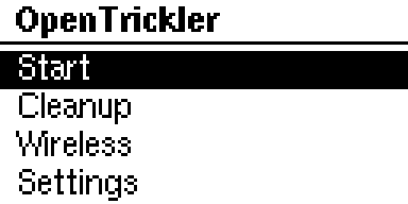
This firmware controls reloading equipment. Verify every charge with a calibrated scale, supervise all motor activity, and keep a known-good UF2 available for rollback.
Keep the repository private while firmware behavior, safety notes, and release packaging are being reviewed. Do not enable public GitHub Pages until the beta is ready for external release.
What changed
This branch keeps the normal OpenTrickler charge flow, display workflow, scale support, and motor control foundation, then adds an adaptive model that can be characterized, calibrated, saved, and gently steered per profile.
Each profile can store learned flow, tail, confidence, machine timing, steering, and recovery behavior.
Measures coarse, trim, fine, and micro-recovery delivery to build a model for the selected setup.
Captures scale response, settle behavior, open-loop flow, and handoff margins after a model exists.
Normal throws refine the model using final error, phase timing, stop weights, recovery time, and stalls.
Faster, Safer, Fine Finish Faster, Bulk Closer, and Undo Last actions bias a saved model carefully.
Beta 8 splits recovery into fine_recover and micro_heal so small underthrows continue healing.
Status, tuning, steering, charge state, system info, and OTA staging are available over Wi-Fi.
Private logs, raw captures, collector tooling, generated binaries, and comparison dumps are excluded.
Compatibility
The codebase builds for Raspberry Pi Pico W and Pico 2 W boards and targets OpenTrickler controller hardware with stepper-driven coarse/fine tricklers, optional servo gate, NeoPixel status, and the mini 12864 display.
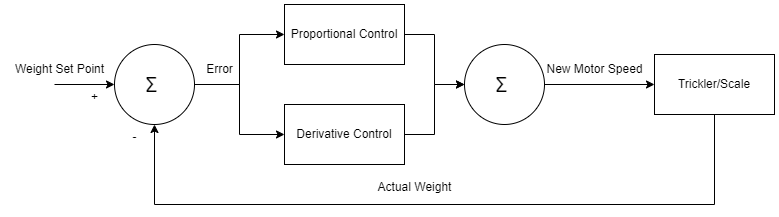
Get running
Use USB flashing for first install, recovery, and rollback. Use OTA only after the device is already running firmware that supports OTA staging.
Remove the controller from 12/24 V motor power before attaching USB.
Hold BOOTSEL on the Pico W or Pico 2 W while connecting micro USB.
Copy app.uf2 to the RPI-RP2 drive. The board disconnects and reboots automatically.
Open the web portal or REST system information and confirm the expected release string.
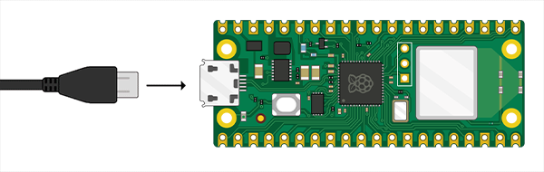
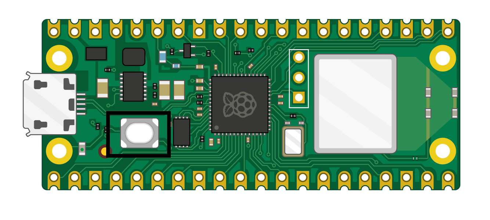
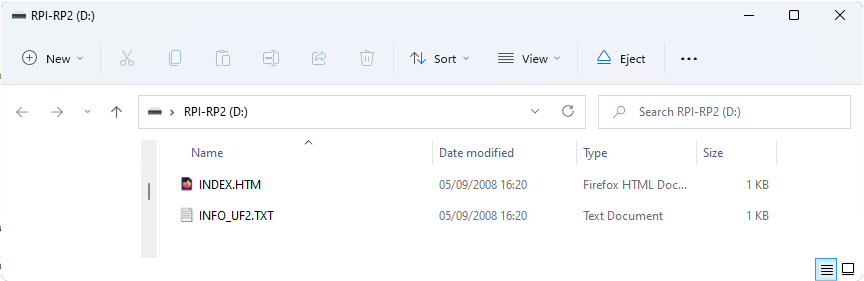
Network setup
On first boot, the controller starts its own access point. Configure a 2.4 GHz network from a laptop or phone, then use the assigned LAN address for the web portal, REST API, and OTA.
opentrickler.
http://192.168.4.1 and enter 2.4 GHz Wi-Fi credentials.
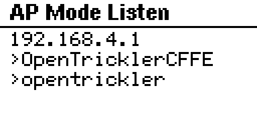
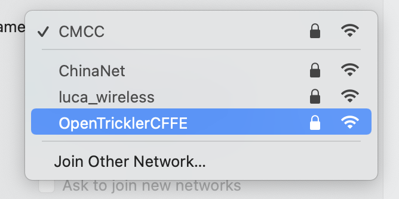
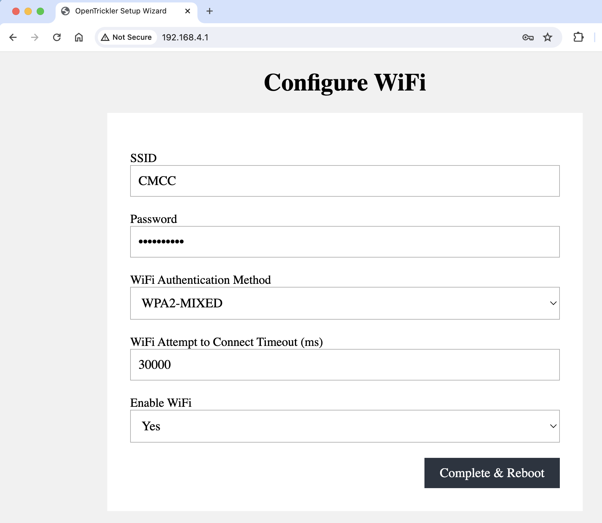
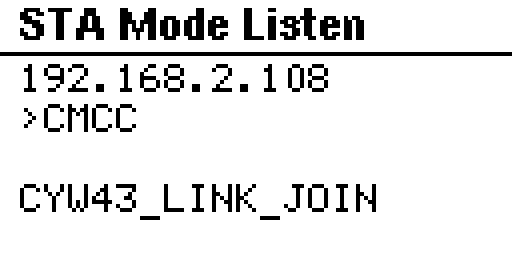
Profiles first
Profiles are the boundary around learned behavior. Keep separate profiles for different powders, tube geometries, scale setups, gate behavior, and target ranges whenever practical.
Varget 36.5 or H4350 short tube.Powder, tube, scale, target range, gate, or mechanical behavior changes enough to affect flow.
The saved model no longer matches real throws, or after meaningful hardware or scale changes.
AI tuning workflow
Characterization measures how this machine, this powder, this tube setup, and this scale behave. It builds a working model and waits for you to save it to the selected profile.
Fill the hopper, confirm the tube and gate setup, connect the scale, warm up the scale, and verify zero.
Open Settings, AI Tuning, select the correct profile, and enter the normal target charge weight.
Start characterization and follow the normal remove/return pan prompts without changing the setup.
The firmware samples coarse, trim, fine, and recovery behavior while tracking delivered weight and tail.
Wait for the tuner state to reach ready_to_save; cancel and rerun if the scale or powder flow was unstable.
Apply/save the model to the selected profile. The model persists in flash and becomes available for production.
Stable scale, repeatable pan handling, clean tube flow, correct target weight, and the same setup you plan to use for production.
The scale drifts, powder bridges, the wrong profile is selected, the pan workflow is interrupted, or the model obviously learned from bad samples.
Machine timing
Calibration should be run after a characterization model has been saved. It measures the machine behavior that affects handoff timing and final recovery.
Machine calibration requires an existing saved characterization model for the selected profile.
Use the same powder, tube, scale, pan, and target range as characterization.
Start from the AI Tuning panel and let the controller complete the planned timing samples.
Save the completed calibration, then run supervised production charges before relying on it.
Scale sample period, response latency, settle time, coarse tail, fine tail, open-loop flow, and bulk handoff margin.
After changing scale, tube, powder behavior, gate geometry, major motor settings, or when handoff and recovery feel wrong.
Production refinement
Runtime learning happens during normal throws. Steering lets you add a small human preference on top of the saved model, then observe whether the machine becomes faster or safer in real operation.
| Action | Use when |
|---|---|
| Faster | Charges are consistently safe but slower than needed. |
| Safer | Overthrows, heavy tails, or unstable finishing appear. |
| Fine Finish Faster | Bulk handoff is good, but fine finishing is too slow. |
| Bulk Closer | Coarse/bulk handoff is too conservative and leaves too much for fine. |
| Undo Last | The most recent steering step made behavior worse. |
Daily operation
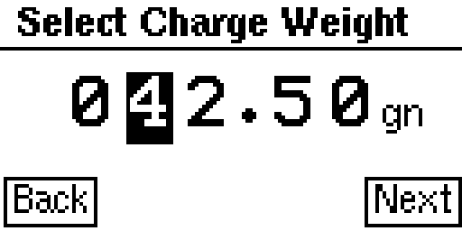
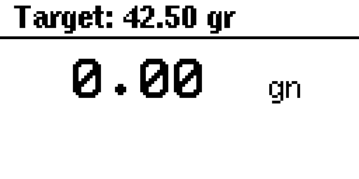
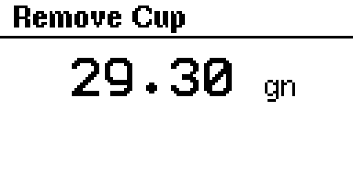
Integration surface
The web portal and OTA uploader use the controller REST API. These endpoints are useful for firmware verification, support tooling, and local automation.
| Endpoint | Purpose | Key parameters |
|---|---|---|
| /rest/ai_tuning_start | Start characterization and enter charge mode. | profile_idx, target |
| /rest/ai_machine_calibration_start | Run machine timing calibration after a saved model exists. | profile_idx, target |
| /rest/ai_tuning_status | Read active state, plan, last drop, working model, and saved model. | profile_idx |
| /rest/ai_tuning_apply | Save the completed working model to the selected profile. | none |
| /rest/ai_steering | Bias a saved model toward a selected behavior. | profile_idx, action |
| /rest/ai_tuning_history | Read saved model samples and runtime observations. | profile_idx |
| /rest/ai_tuning_config | Read AI budgets, sample counts, target, noise, and cost weights. | none |
| /rest/charge_mode_state | Read live charge state, weight, events, phases, and telemetry. | none |
| /rest/system_control | Read system and firmware information. | none |
| /rest/ota_status | Report OTA support, staging capacity, and staged-image metadata. | none |
| /rest/ota_begin, /rest/ota_chunk, /rest/ota_finalize, /rest/ota_apply | Stage, verify, and apply app.bin over Wi-Fi. | size, crc32, offset, data |
python tools/ota_upload.py --host <device-ip-or-hostname> --bin build-pico2w-release/app.bin --applyDeveloper setup
Use the Raspberry Pi Pico SDK toolchain, CMake, Ninja, Git, Python 3, and repository submodules. The Pico 2 W release build is the current beta baseline.
git clone https://github.com/jeanphilippebellavance-cmd/Opentrickler_ML.git
cd Opentrickler_ML
git submodule update --init --recursive.\configure_env.ps1
cmake -B build-pico2w-release -G Ninja -DCMAKE_BUILD_TYPE=Release -DPICO_BOARD=pico2_wcmake --build build-pico2w-release --config Release.\configure_env.ps1
cmake -B build-picow-release -G Ninja -DCMAKE_BUILD_TYPE=Release -DPICO_BOARD=pico_w
Build outputs are ignored by git. Use app.uf2 for USB flashing and app.bin for OTA upload.
Release status
Beta 8 focuses on recovery split behavior, safer coarse top-up, and cleaner separation between fast fine tail and active recovery delivery.
fine_recover and micro_heal zones.2026.06.16-beta.8 after reboot.Repository map
.github/workflows/Firmware build automation for Pico W and Pico 2 W.docs/This GitHub Pages-ready private beta documentation site.firmware_release_history/Public-safe changelog, issue ledger, and release notes only.library/Embedded library and submodule content used by the firmware.manuals/Original flashing, wireless, and scale setup material.resources/Screenshots and diagrams used by docs and manuals.scripts/Development helper scripts.src/Firmware source, REST endpoints, web portal, drivers, charge mode, OTA, and AI model code.targets/Board and hardware target support.tests/Local firmware tests and validation material.tools/ota_upload.pyWi-Fi OTA uploader for app.bin images.RELEASE_VERSIONSingle-file release identity consumed by the version generator.Repository hygiene
This repository is for firmware source and public-safe documentation. Local testing evidence remains outside the Git history unless it is deliberately prepared for release.
Private flight logs, charge CSVs, REST captures, and local test-session folders are ignored.
The field data collector source, packages, and packaging scripts are not part of this GitHub repo.
Firmware binaries are produced by local builds or GitHub Actions, not committed to release history.
Personal LAN addresses and private session paths are removed from user-facing documentation.